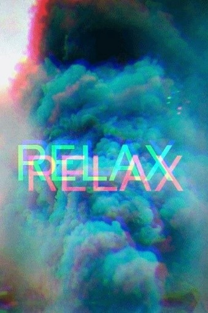

Tendencias en diseño gráfico para el 2018
Publicado por David Ochoa. Tomado de GraphicMama's
En la era del arte digital, las tendencias del diseño gráfico pueden evaporarse tan rápidamente como surgieron. Lo que ha sido moderno en los últimos años puede parecer totalmente desactualizado en 2018. Si bien algunas tendencias han resistido la prueba del tiempo, otras han desaparecido en un abrir y cerrar de ojos solo para dar cabida a nuevos looks modernos. Por lo tanto, si está buscando un antónimo de aburrido, esto sería - tendencias de diseño gráfico 2018.
Últimas modas gráficas
Este es el año de diseños locos, experimentos e imaginación salvaje. Si bien es posible que algunos de estos sean una gran sorpresa, es posible que haya visto venir a otros. Entonces, no perdamos un minuto más. Es hora de revelar qué tendencias en el diseño gráfico serán éxitos absolutos en 2018.
“Efecto Glitch"
La imagen corrupta, es decir, el efecto de falla, ha sido una de las tendencias más populares en el mundo digital últimamente. Aparentemente, lo que una vez fue molesto para el espectador ahora se ha convertido en un efecto verdaderamente deseado.

“Efecto color de los canales"
Jugar con canales de color ha sido muy popular entre los diseñadores. La técnica permite a los diseñadores crear grandes efectos ilusorios. Una holografía, una alucinación, una realidad distorsionada ... todos estos tienen una gran influencia en el espectador, lo que hace que "Canales de color" sea una de las principales tendencias de diseño gráfico 2018.
“Efecto exposición doble"
La doble exposición ha sido una cosa desde hace varios años. A pesar de que algunos diseñadores han dejado de lado esta técnica por un tiempo, definitivamente vemos un aumento de los diseños de doble exposición que sorprenden al espectador.
“Efecto Doble exposición Duotone"
"Estoy viendo el doble" ya no será un efecto post-licor. Esta tendencia es un híbrido de Double Exposure y Duotone, además de usar canales de color. En resumen, la doble exposición duotono se logra duplicando la imagen o usando dos imágenes superpuestas diferentes en colores monocromos. De esta forma, los diseñadores logran un efecto de "adelanto de su tiempo".